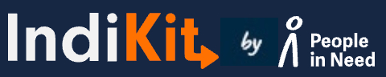

<!doctype html>
<html lang="en">
<head>
<meta charset="utf-8">
<title>IndiKit · Environmental Mainstreaming prototype</title>
<link rel="preconnect" href="https://fonts.googleapis.com">
<link rel="preconnect" href="https://fonts.gstatic.com" crossorigin>
<link href="https://fonts.googleapis.com/css2?family=Ubuntu:wght@400;500;700&display=swap" rel="stylesheet">
<style>
*,*::before,*::after{box-sizing:border-box}
body{margin:0;font-family:Ubuntu,system-ui,sans-serif;color:#1A1A1A}
a{color:#C24E00}a:hover{color:#16253F}
button{font-family:inherit}
.ik{width:1280px;background:#F1F1F1;font-family:Ubuntu,system-ui,sans-serif}
.ik-in{width:1100px;margin:0 auto;background:#fff}
.ik-nav>a,.ik-nav>div>a{color:#fff;text-decoration:none;font-weight:500;font-size:17px;text-transform:uppercase;white-space:nowrap;display:flex;align-items:center;gap:6px;height:76px;cursor:pointer}
.ik-nav>a:hover,.ik-nav>div>a:hover{color:#FF6F00}
.ik-tile{display:flex;align-items:center;gap:20px;padding:0 22px;height:80px;background:#fff;border:1px solid #E3E1DD;color:#1A1A1A;text-decoration:none;font-size:18px;font-weight:500;line-height:1.2;transition:border-color .15s}
.ik-tile:hover{border-color:#C24E00;color:#1A1A1A}
.ik-tile img{width:44px;height:44px;flex:none;object-fit:contain}
.ik-btn{display:inline-flex;align-items:center;justify-content:center;gap:8px;height:44px;padding:0 26px;background:#C24E00;color:#fff;font-weight:700;font-size:16px;text-transform:uppercase;text-decoration:none;border:0;cursor:pointer;white-space:nowrap}
.ik-btn2{display:inline-flex;align-items:center;justify-content:center;gap:8px;height:44px;padding:0 24px;background:transparent;color:#C24E00;font-weight:700;font-size:16px;text-transform:uppercase;text-decoration:none;border:2px solid #C24E00;cursor:pointer;white-space:nowrap}.ik-btn2:hover{background:#FFF4EC;color:#A84300}.ik-btn2.inv{color:#fff;border-color:#fff}.ik-btn2.inv:hover{background:rgba(255,255,255,.1);color:#fff}
.ik-btn:hover{background:#A84300;color:#fff}
.ik-card{background:#fff;border:1px solid #E3E1DD}
.ik-h2{font-size:34px;font-weight:500;line-height:1.15;margin:0 0 14px}
.ik-eye{font-size:15px;font-weight:700;color:#C24E00;text-transform:uppercase;letter-spacing:.04em;margin-bottom:10px;display:flex;align-items:center;gap:10px}
.ik-p{font-size:17px;line-height:1.5;color:#1A1A1A;margin:0}

.ik{width:100%;min-width:1180px}
.ik-in{width:1100px}
.ik-nav>div>a{cursor:pointer}
.ab-pl:hover{border-color:#C24E00 !important;color:#C24E00 !important}
.ik-dd:hover{color:#C24E00 !important;background:#FFF4EC}
.ct-f label{display:block;font-size:15px;font-weight:500;margin-bottom:6px}
.ct-f input,.ct-f select,.ct-f textarea{width:100%;border:1px solid #C9C6C0;background:#fff;padding:0 12px;height:46px;font:16px Ubuntu,sans-serif;color:#1A1A1A}
.ct-f textarea{height:160px;padding:12px;resize:vertical;line-height:1.5}
.ct-f input:focus,.ct-f select:focus,.ct-f textarea:focus{outline:2px solid #FF6F00;outline-offset:-1px;border-color:#C24E00}
.ct-f .err input,.ct-f .err textarea{border-color:#C62828}
.ct-e{color:#C62828;font-size:14px;margin-top:4px}
.ik-stile{height:auto;min-height:56px;padding:10px 14px;gap:14px;font-size:15px}.ik-stile img{width:30px;height:30px}
@keyframes tIn{from{opacity:0;transform:translate(-50%,-8px)}to{opacity:1;transform:translate(-50%,0)}}
.ik-stile.on{border-color:#C24E00;background:#FFF4EC}
.nf-chip{display:flex;align-items:center;justify-content:space-between;gap:10px;text-align:left;padding:12px 14px;border:1px solid #C9C6C0;background:#fff;font:400 15px/1.3 Ubuntu,sans-serif;color:#1A1A1A;cursor:pointer}
.nf-chip.dis{opacity:.45;cursor:default}.nf-chip:hover:not(:disabled){border-color:#C24E00}.nf-chip.on{border-color:#C24E00;background:#FFF4EC;font-weight:500}
.nf-chip .n{flex:none;font-size:13px;color:#1A1A1A;font-weight:500}
.nf-f{display:inline-flex;align-items:center;gap:6px;height:32px;padding:0 10px;border:1px solid #C9C6C0;background:#fff;font:500 14px Ubuntu,sans-serif;color:#1A1A1A;cursor:pointer}
.nf-f span{font-size:12px;color:#1A1A1A;font-weight:400}.nf-f:hover:not(:disabled){border-color:#C24E00}
.nf-f.on{background:#FF6F00;border-color:#C24E00;color:#fff}.nf-f.on span{color:#fff}.nf-f:disabled{opacity:.45;cursor:default}
.nf-cb{display:inline-flex;align-items:center;gap:8px;font-size:15px;cursor:pointer;min-height:28px}.nf-cb input{width:18px;height:18px;margin:0;accent-color:#C24E00;cursor:pointer}.nf-cb span{font-size:13px;color:#1A1A1A}.nf-cb.dis{color:#A0A0A0;cursor:default}.nf-cb.dis input{cursor:default}
.nf-dd{display:inline-flex;align-items:center;gap:8px;height:40px;padding:0 14px;border:1px solid #C9C6C0;background:#fff;font:500 15px Ubuntu,sans-serif;color:#1A1A1A;cursor:pointer}
.nf-dd:hover,.nf-dd.open{border-color:#C24E00}.nf-dd .b{background:#C24E00;color:#fff;font-size:12px;font-weight:700;padding:1px 7px;border-radius:9px}
.nf-opt{display:flex;align-items:center;gap:10px;padding:9px 4px;font-size:15px;cursor:pointer}.nf-opt input{width:18px;height:18px;margin:0;accent-color:#C24E00}.nf-opt.dis{color:#A0A0A0;cursor:default}
.nf-row{display:flex;align-items:center;justify-content:space-between;gap:16px;padding:12px 0;border-bottom:1px solid #E3E1DD;color:#1A1A1A;text-decoration:none;font-size:16px;font-weight:500}
.nf-row:hover{color:#C24E00}.nf-tag{font-size:12px;font-weight:500;color:#1A1A1A;border:1px solid #E3E1DD;padding:2px 7px;white-space:nowrap}
.ik-crumb{color:#1A1A1A;text-decoration:underline;text-decoration-color:#C9C6C0;text-underline-offset:3px}.ik-crumb:hover{color:#C24E00;text-decoration-color:#C24E00}
.rs-li{display:grid;grid-template-columns:minmax(0,1fr) auto;gap:24px;align-items:center;padding:16px 0;border-bottom:1px solid #E3E1DD}
.rs-t{font-size:18px;font-weight:500;line-height:1.35}
.rs-dl{display:flex;align-items:center;gap:6px}
.rs-l{display:inline-flex;align-items:center;gap:6px;height:36px;padding:0 12px;border:1px solid #E3E1DD;background:#fff;color:#1A1A1A;font:500 14px Ubuntu,sans-serif;cursor:pointer;transition:border-color .15s,color .15s}
.rs-l:hover{border-color:#C24E00;color:#C24E00}
.rs-l.done{border-color:#2E7D4F;color:#1F6B3F;background:#EEF7F1}
.rs-jump a{color:#1A1A1A;text-decoration:none;font-weight:500;font-size:16px;padding:10px 16px;border:1px solid #E3E1DD;background:#fff}
.rs-jump a:hover{border-color:#C24E00;color:#C24E00}
:focus-visible{outline:3px solid #16253F;outline-offset:2px}header :focus-visible,.ik-dark :focus-visible{outline-color:#fff}
.ik-dark .ik-eye{color:#FF8A33}.ik-dark a:not(.ik-btn):not(.ik-btn2){color:#fff}
.ik-in{width:100%!important;max-width:none}
.ik{--pad:max(30px,calc((100vw - 1280px) / 2 + 30px))}
.ik-in>section,.ik-in>div:not(.ik-grid)>section,.ik-in>footer>div,.ik-in>nav{padding-left:var(--pad)!important;padding-right:var(--pad)!important}
.ik>header{padding-left:var(--pad)!important;padding-right:var(--pad)!important}
.ik-grid{max-width:1280px;width:100%;margin:0 auto}
.ik-skip{position:absolute;left:16px;top:-60px;z-index:2000;background:#fff;color:#1A1A1A;padding:12px 18px;font-weight:700;text-decoration:underline}.ik-skip:focus{top:12px}
@media (prefers-reduced-motion:reduce){*,*::before,*::after{animation:none!important;transition:none!important;scroll-behavior:auto!important}}
</style>
<script src="https://unpkg.com/react@18.3.1/umd/react.development.js" integrity="sha384-hD6/rw4ppMLGNu3tX5cjIb+uRZ7UkRJ6BPkLpg4hAu/6onKUg4lLsHAs9EBPT82L" crossorigin="anonymous"></script>
<script src="https://unpkg.com/react-dom@18.3.1/umd/react-dom.development.js" integrity="sha384-u6aeetuaXnQ38mYT8rp6sbXaQe3NL9t+IBXmnYxwkUI2Hw4bsp2Wvmx4yRQF1uAm" crossorigin="anonymous"></script>
<script src="https://unpkg.com/@babel/standalone@7.29.0/babel.min.js" integrity="sha384-m08KidiNqLdpJqLq95G/LEi8Qvjl/xUYll3QILypMoQ65QorJ9Lvtp2RXYGBFj1y" crossorigin="anonymous"></script>
<script src="image-slot.js"></script>
</head>
<body style="background:#F1F1F1">
<div id="app" data-screen-label="Env Mainstreaming prototype"></div>
<script type="text/babel">
const ico=(f,c)=>`https://www.indikit.net/files/${f}i?slug=category-${c}-svg`;
const SECT=[[1,1,"Nutrition"],[10,27,"Food Security"],[3,4,"Agriculture and NRM"],[16,768,"Environment"],[8,10,"Market Development"],[15,696,"Income and Employment"],[5,7,"Maternal and Child Health"],[2,2,"WASH"],[27,1205,"Basic Education"],[26,1201,"Vocational Education"],[13,78,"Gender Equality"],[7,9,"Social Protection"],[12,44,"Cash and Voucher Assistance"],[6,8,"Good Governance"],[9,26,"Shelter and NFI"],[11,29,"Disaster Risk Management"]];
const CROSS=[[24,1017,"Environmental Mainstreaming"],[17,1010,"Social and Behaviour Change"],[19,1012,"Advocacy"],[20,1013,"Community Engagement and Participation"],[22,1015,"Communication with Communities"],[18,1011,"Social Media"],[23,1016,"Gender and Age Mainstreaming"],[21,1014,"Protection Mainstreaming"],[25,1018,"Social Inclusion Mainstreaming"]];
const N="#16253F", O="#FF6F00", OT="#C24E00", RULE="#E3E1DD";
const Ext=({s=16})=><><span style={{position:"absolute",width:1,height:1,overflow:"hidden",clip:"rect(0 0 0 0)"}}> (opens in a new tab)</span><svg aria-hidden="true" width={s} height={s} viewBox="0 0 24 24" fill="none" stroke="currentColor" strokeWidth="2" strokeLinecap="round" strokeLinejoin="round"><path d="M14 4h6v6M20 4l-9 9M18 14v5a1 1 0 0 1-1 1H5a1 1 0 0 1-1-1V7a1 1 0 0 1 1-1h5"/></svg></>;
const Chev=()=><svg width="14" height="14" viewBox="0 0 24 24" fill="none" stroke="currentColor" strokeWidth="2.2" strokeLinecap="round"><path d="M6 9l6 6 6-6"/></svg>;
const Check=()=><svg width="18" height="18" style={{flex:"none"}} viewBox="0 0 24 24" fill="none" stroke={O} strokeWidth="2.6" strokeLinecap="round" strokeLinejoin="round"><path d="M5 12l5 5L20 7"/></svg>;
const New=()=><span style={{fontSize:11,fontWeight:700,background:OT,color:"#fff",padding:"2px 6px",letterSpacing:".04em"}}>NEW</span>;

function Crumbs({items}){
  return <nav aria-label="Breadcrumb" style={{borderBottom:"1px solid #E3E1DD",padding:"14px 30px",background:"#fff"}}><ol style={{listStyle:"none",margin:0,padding:0,display:"flex",alignItems:"center",flexWrap:"wrap",gap:8,fontSize:14}}>{items.map(([l,u],i)=><li key={l} style={{display:"flex",alignItems:"center",gap:8}}>{i>0&&<svg width="12" height="12" viewBox="0 0 24 24" fill="none" stroke="#9A9A9A" strokeWidth="2.4" strokeLinecap="round"><path d="M9 6l6 6-6 6"/></svg>}{u?<a href={u} className="ik-crumb">{l}</a>:<span aria-current="page" style={{color:"#1A1A1A",fontWeight:500}}>{l}</span>}</li>)}</ol></nav>;
}
const BEN_IC={standard:<><path d="M12 3l7 3v5c0 4.5-3 8-7 10-4-2-7-5.5-7-10V6z"/><path d="M9 12l2 2 4-4"/></>,experts:<><circle cx="9" cy="8" r="3"/><path d="M3 20a6 6 0 0 1 12 0"/><circle cx="17" cy="9" r="2.5"/><path d="M16 14.5a5 5 0 0 1 5 5.5"/></>,loop:<><path d="M4 12a8 8 0 0 1 14-5.3M20 12a8 8 0 0 1-14 5.3"/><path d="M18 3v4h-4M6 21v-4h4"/></>};
function BenCard({icon,t,d,cta}){
  return <div className="ik-card" style={{padding:"22px 20px",display:"flex",flexDirection:"column"}}><svg aria-hidden="true" width="32" height="32" viewBox="0 0 24 24" fill="none" stroke={O} strokeWidth="1.6" strokeLinecap="round" strokeLinejoin="round" style={{marginBottom:14}}>{BEN_IC[icon]}</svg><h3 style={{fontSize:19,lineHeight:1.3,fontWeight:700,margin:"0 0 8px"}}>{t}</h3><p style={{fontSize:15,lineHeight:1.5,color:"#1A1A1A",margin:0}}>{d}</p>{cta&&<div style={{marginTop:"auto",paddingTop:20}}>{cta}</div>}</div>;
}
function Sidebar(){
  const [t,setT]=React.useState("c");
  const B=({id,l})=><button onClick={()=>setT(id)} aria-selected={t===id} role="tab" style={{flex:1,background:"none",border:0,padding:"0 4px 12px",fontSize:15,fontWeight:500,textTransform:"uppercase",lineHeight:1.25,color:t===id?"#1A1A1A":"#1A1A1A",cursor:"pointer",boxShadow:t===id?"inset 0 -3px 0 "+O:"none",marginBottom:-1}}>{l}</button>;
  return (
    <aside aria-label="Indicators" style={{borderRight:"1px solid "+RULE,padding:"24px 20px 40px",background:"#FAF9F7",alignSelf:"stretch"}}>
      <div style={{fontSize:13,fontWeight:700,letterSpacing:".06em",textTransform:"uppercase",color:"#1A1A1A",marginBottom:14}}>Indicators</div>
      <div role="tablist" style={{display:"flex",gap:8,borderBottom:"1px solid "+RULE,marginBottom:14}}><B id="s" l="Sectoral"/><B id="c" l="Cross-cutting"/></div>
      <div style={{display:"flex",flexDirection:"column",gap:8}}>{(t==="s"?SECT:CROSS).map(([f,c,l])=><a key={c} className={"ik-tile ik-stile"+(({"Nutrition":"IndiKit Nutrition prototype.html","Environmental Mainstreaming":"IndiKit Env Mainstreaming prototype.html"})[l]&&decodeURIComponent(location.pathname).includes(({"Nutrition":"IndiKit Nutrition prototype.html","Environmental Mainstreaming":"IndiKit Env Mainstreaming prototype.html"})[l])?" on":"")} href={({"Nutrition":"IndiKit Nutrition prototype.html","Environmental Mainstreaming":"IndiKit Env Mainstreaming prototype.html"})[l]||"#"}>{l}</a>)}</div>
    </aside>
  );
}
function Grid({items,cols=4}){
  return <div style={{display:"grid",gridTemplateColumns:`repeat(${cols},minmax(0,1fr))`,gap:14}}>{items.map(([f,c,l])=><a key={c} className="ik-tile" href={({"Nutrition":"IndiKit Nutrition prototype.html","Environmental Mainstreaming":"IndiKit Env Mainstreaming prototype.html"})[l]||"#"}>{l}</a>)}</div>;
}
function AIPop(){
  return (
    <div style={{position:"absolute",top:"100%",left:-20,width:330,background:"#fff",color:"#1A1A1A",border:`1px solid ${RULE}`,borderTop:`3px solid ${O}`,padding:22,zIndex:20,boxShadow:"0 10px 28px rgba(22,37,63,.18)",textTransform:"none"}}>
      <div style={{fontSize:20,fontWeight:700,color:OT,marginBottom:8}}>AI Assistant</div>
      <p style={{fontSize:15,lineHeight:1.5,margin:"0 0 16px",color:"#1A1A1A"}}>Find indicators by asking questions — the same IndiKit content, in a conversation.</p>
      <a className="ik-btn" href="https://chatgpt.com/g/g-69d8cae4a3108191983cc1302c5ee43f-indikit-assistant" target="_blank" rel="noopener">Open in ChatGPT <Ext s={15}/></a>
    </div>
  );
}
function AboutMenu(){
  const it={display:"block",padding:"12px 20px",color:"#1A1A1A",textDecoration:"none",fontSize:16,textTransform:"none",borderTop:`1px solid ${RULE}`};
  return <div style={{position:"absolute",top:"100%",left:-20,width:260,background:"#fff",borderTop:`3px solid ${O}`,boxShadow:"0 0 0 1px "+RULE+", 0 10px 28px rgba(22,37,63,.18)",zIndex:20}}><a href="IndiKit About prototype.html" className="ik-dd" style={{...it,borderTop:0}}>About IndiKit</a><a href="IndiKit Updates prototype.html" className="ik-dd" style={it}>What's new</a><a href="IndiKit Sources prototype.html" className="ik-dd" style={it}>Sources &amp; standards</a><a href="IndiKit Own prototype.html" className="ik-dd" style={it}>Your own IndiKit</a></div>;
}
function ResMenu(){
  const it={display:"block",padding:"12px 20px",color:"#1A1A1A",textDecoration:"none",fontSize:16,textTransform:"none",borderTop:`1px solid ${RULE}`};
  const L=[["Sample Size and Margin of Error Calculator","IndiKit Calculator prototype.html"],["Rapid Guides and Checklists","IndiKit Resources prototype.html"],["Webinar Recordings","IndiKit Webinars prototype.html"],["Additional Indicator Resources","IndiKit Links prototype.html"],["IndiKit Promo Materials","IndiKit Promo prototype.html"]];
  return <div style={{position:"absolute",top:"100%",left:-20,width:340,background:"#fff",borderTop:`3px solid ${O}`,boxShadow:"0 0 0 1px "+RULE+", 0 10px 28px rgba(22,37,63,.18)",zIndex:20}}>{L.map(([l,u],i)=><a key={l} href={u} className="ik-dd" style={i?it:{...it,borderTop:0}}>{l}</a>)}</div>;
}
function Header({open=false,about=false,active}){
  const [rs,setRs]=React.useState(false);
  const [h,setH]=React.useState(false);
  const [ab,setAb]=React.useState(false);
  return (
    <header style={{background:N,display:"flex",alignItems:"center",padding:"0 36px",height:76,position:"relative"}}>
      <a href="IndiKit HP prototype.html" style={{display:"block"}}></a>
      <nav aria-label="Main" className="ik-nav" style={{display:"flex",gap:30,marginLeft:40}}>
                <div style={{position:"relative"}} onMouseEnter={()=>setAb(true)} onMouseLeave={()=>setAb(false)} onFocus={()=>setAb(true)} onBlur={e=>{if(!e.currentTarget.contains(e.relatedTarget))setAb(false)}} onKeyDown={e=>{if(e.key==="Escape")setAb(false)}}><a href="IndiKit About prototype.html" style={["about","updates","sources"].includes(active)?{boxShadow:"inset 0 -3px 0 #FF6F00"}:undefined}>About <Chev/></a>{(about||ab)&&<AboutMenu/>}</div><div style={{position:"relative"}} onMouseEnter={()=>setRs(true)} onMouseLeave={()=>setRs(false)} onFocus={()=>setRs(true)} onBlur={e=>{if(!e.currentTarget.contains(e.relatedTarget))setRs(false)}} onKeyDown={e=>{if(e.key==="Escape")setRs(false)}}><a href="IndiKit Resources hub prototype.html" style={active==="res"?{boxShadow:"inset 0 -3px 0 #FF6F00"}:undefined}>Tools &amp; Guides <Chev/></a>{rs&&<ResMenu/>}</div>
        <div style={{position:"relative"}} onMouseEnter={()=>setH(true)} onMouseLeave={()=>setH(false)} onFocus={()=>setH(true)} onBlur={e=>{if(!e.currentTarget.contains(e.relatedTarget))setH(false)}} onKeyDown={e=>{if(e.key==="Escape")setH(false)}}>
          <a href="https://chatgpt.com/g/g-69d8cae4a3108191983cc1302c5ee43f-indikit-assistant" target="_blank" rel="noopener">AI Assistant <Ext s={14}/></a>
        </div>
        <a href="IndiKit Contact prototype.html" style={active==="contact"?{boxShadow:"inset 0 -3px 0 #FF6F00"}:undefined}>Contact</a>
      </nav>
      <div style={{marginLeft:"auto",display:"flex",alignItems:"center",gap:18}}>
        <button data-na aria-label="Search" style={{background:"none",border:0,padding:6,cursor:"pointer",display:"flex"}}><svg width="24" height="24" viewBox="0 0 24 24" fill="none" stroke="#fff" strokeWidth="2" strokeLinecap="round"><circle cx="11" cy="11" r="7"/><path d="M20 20l-4-4"/></svg></button>
        <button data-na aria-label="Language switch" style={{background:"#fff",color:"#1A1A1A",height:38,padding:"0 12px",display:"flex",alignItems:"center",gap:10,fontSize:15,border:0,cursor:"pointer",fontFamily:"inherit"}}>English <Chev/></button>
      </div>
    </header>
  );
}
function Tabs({tab,setTab}){
  const T=({id,t})=><button role="tab" aria-selected={tab===id} onClick={()=>setTab(id)} style={{background:"none",border:0,padding:"0 4px 14px",fontSize:19,fontWeight:500,textTransform:"uppercase",color:tab===id?"#1A1A1A":"#1A1A1A",cursor:"pointer",boxShadow:tab===id?`inset 0 -4px 0 ${O}`:"none",marginBottom:-1}}>{t}</button>;
  return <div id="indicators" role="tablist" style={{display:"flex",justifyContent:"center",gap:40,borderBottom:`1px solid ${RULE}`}}><T id="s" t="Sectoral indicators"/><T id="c" t="Cross-cutting indicators"/></div>;
}
function AIBanner(){
  return (
    <div style={{background:"#FFF4EC",border:"1px solid #FFD9BD",display:"grid",gridTemplateColumns:"minmax(0,5fr) minmax(0,6fr)",gap:40,alignItems:"center",padding:"28px 0 28px 32px",overflow:"hidden"}}>
      <div>
        <div className="ik-eye">AI Assistant <New/></div>
        <h2 className="ik-h2" style={{fontSize:28}}>Prefer to ask? Describe your project, get the right indicators.</h2>
        <p className="ik-p" style={{fontSize:16,marginBottom:22}}>The IndiKit Assistant suggests indicators and explains how to collect, analyse and interpret the data — drawing on the same IndiKit content.</p>
        <a className="ik-btn" href="https://chatgpt.com/g/g-69d8cae4a3108191983cc1302c5ee43f-indikit-assistant" target="_blank" rel="noopener" title="Opens ChatGPT in a new tab">Open in ChatGPT <Ext/></a>
      </div>
      <div style={{border:"1px solid #FFD9BD",borderRight:0,background:"#fff",height:250,overflow:"hidden"}}></div>
    </div>
  );
}
function Why(){
  const roles=["Proposal writers and technical staff","MEAL specialists","Capacity strengthening teams","Programme managers"];
  const ben=[["Aligned with sector standards","Based on methodologies promoted by UN agencies, Sphere, donors and other respected actors."],["Reviewed by hundreds of specialists","M&E and technical experts have contributed to make the guidance accurate, practical and useful."],["From practitioners, for practitioners","Field feedback on gaps and weaknesses is reviewed and used to keep improving the content."]];
  return (
    <section style={{padding:"64px 30px",background:"#E9EEF6"}}>
      <div className="ik-eye">Why IndiKit</div>
      <h2 className="ik-h2" style={{marginBottom:28}}>Monitoring and evaluation made easier and more rigorous.</h2>
      <div style={{display:"grid",gridTemplateColumns:"minmax(0,1fr) minmax(0,2fr)",gap:40,alignItems:"stretch"}}>
        <div style={{display:"flex",flexDirection:"column"}}>
          <p className="ik-p" style={{marginBottom:20}}>Developed by People in Need to help you select well-formulated indicators and get reliable data.</p>
          <div style={{fontSize:16,fontWeight:700,marginBottom:10}}>Especially useful for</div>
          <ul style={{listStyle:"none",margin:0,padding:0,display:"flex",flexDirection:"column",gap:8}}>{roles.map(r=><li key={r} style={{display:"flex",gap:10,alignItems:"center",fontSize:16}}><Check/>{r}</li>)}</ul>
        </div>
        <div style={{display:"grid",gridTemplateColumns:"repeat(3,minmax(0,1fr))",gap:14}}>
          {ben.map(([t,d],i)=><BenCard key={t} icon={["standard","experts","loop"][i]} t={t} d={d}/>)}
        </div>
      </div>
    </section>
  );
}
function Update(){
  return <div data-editable="update"><UE d={window.__UPD} bg="#E9EEF6" line="#C9D3E3"/></div>;
}
function Intro(){
  return (
    <section style={{padding:"56px 30px",display:"grid",gridTemplateColumns:"minmax(0,1fr) minmax(0,1.2fr)",gap:48,alignItems:"center"}}>
      <div>
        <div className="ik-eye">New to IndiKit?</div>
        <h2 className="ik-h2">See how IndiKit can support your MEAL work.</h2>
        <p className="ik-p">A short walkthrough: finding indicators, reading the guidance, and using it in your project.</p>
      </div>
      <div style={{position:"relative",aspectRatio:"16/9",background:N,overflow:"hidden"}}>
        <image-slot id="v7-video-poster" placeholder="Video poster frame (16:9)" style={{position:"absolute",inset:0}}></image-slot>
        <svg width="80" height="80" viewBox="0 0 64 64" style={{position:"absolute",left:"50%",top:"50%",transform:"translate(-50%,-50%)",pointerEvents:"none"}}><circle cx="32" cy="32" r="29" fill={N} stroke={O} strokeWidth="3"/><path d="M25 19l20 13-20 13Z" fill={O}/></svg>
      </div>
    </section>
  );
}
function Own(){
  return (
    <section className="ik-dark" style={{background:N,color:"#fff",padding:"56px 30px",display:"grid",gridTemplateColumns:"minmax(0,1fr)",gap:32}}>
      <div>
        <div className="ik-eye">For organisations</div>
        <h2 className="ik-h2" style={{color:"#fff"}}>Your Own IndiKit</h2>
        <p className="ik-p" style={{color:"#fff",marginBottom:28,maxWidth:500}}>Create your own IndiKit, tailored to your organisation and managed through an easy-to-use admin system.</p>
        <a className="ik-btn" href="IndiKit Own prototype.html">See how it works</a>
      </div>
      <div style={{display:"grid",gridTemplateColumns:"repeat(3,minmax(0,1fr))",gap:12}}>
        {[["Branding","Your logo, colours and domain"],["Indicators","Add, edit or hide indicators"],["Guidance","Your own methods and tools"]].map(([t,d])=><div key={t} style={{border:"1px solid rgba(255,255,255,.22)",padding:"20px 18px"}}><div style={{marginBottom:12}}><Check/></div><div style={{fontSize:18,fontWeight:700,marginBottom:4}}>{t}</div><div style={{fontSize:15,lineHeight:1.45}}>{d}</div></div>)}
      </div>
    </section>
  );
}
function News(){
  return (
    <section style={{padding:"48px 30px",background:"#FFF4EC",display:"grid",gridTemplateColumns:"minmax(0,1fr) minmax(0,1.3fr)",gap:48,alignItems:"start"}}>
      <div><h2 className="ik-h2" style={{fontSize:28}}>Get IndiKit news</h2><p className="ik-p" style={{fontSize:16,color:"#1A1A1A"}}>New indicators, guides and webinars from IndiKit.</p></div>
      <div>
        <div style={{display:"flex",gap:10}}><input type="email" aria-label="E-mail address" autoComplete="email" placeholder="Your e-mail address" style={{flex:1,minWidth:0,height:44,border:`1px solid ${O}`,padding:"0 12px",fontSize:16,fontFamily:"inherit",background:"#fff"}}/><button className="ik-btn">Subscribe</button></div>
        <label style={{display:"flex",gap:10,marginTop:14,fontSize:15,lineHeight:1.4,color:"#1A1A1A"}}><input type="checkbox" style={{width:20,height:20,margin:0,flex:"none",accentColor:OT}}/><span>I consent to PIN processing my e-mail address. <a href="#">Full consent here</a>.</span></label>
      </div>
    </section>
  );
}
function Footer(){
  const L=[["Your own IndiKit","IndiKit Own prototype.html"],["Contact","IndiKit Contact prototype.html"],["Personal data protection policy","https://www.clovekvtisni.cz/en/personal-data-protection-policy-1s"],["Cookie settings","#"]];
  return (
    <footer style={{background:"#fff",borderTop:"1px solid "+RULE}}>
      <div style={{padding:"24px 30px",display:"flex",alignItems:"center",justifyContent:"space-between",gap:"16px 32px",flexWrap:"wrap",fontSize:15}}>
        <div style={{display:"flex",flexDirection:"column",gap:8}}>
          <span>© People in Need (PIN), All rights reserved</span>
          <nav aria-label="Footer" style={{display:"flex",gap:"6px 20px",flexWrap:"wrap"}}>{L.map(([l,u])=><a key={l} href={u} target={u.startsWith("http")?"_blank":undefined} rel="noopener" style={{color:"#1A1A1A",textDecoration:"underline",textUnderlineOffset:3}}>{l}</a>)}</nav>
        </div>
        <div style={{display:"flex",gap:28,alignItems:"center"}}></div>
        <span>Made by OLC Webdesign</span>
      </div>
    </footer>
  );
}
const GOALS=[["cap","Strengthened capacity for environmental mainstreaming"],["ra","Improved environmental risk assessment and mitigation"],["eco","More eco-friendly operations and project activities"],["imp","Reduced negative environmental impact"]];
const GROUPS=[
 ["Environmental Mainstreaming in Operations",[["Extent of Environmental Mainstreaming",["Process","Outcome"],[],"ra"],["Adoption of Environmental Protection Practices","Outcome",[],"eco"],["Resources Saved in Operations","Outcome",[],"imp"],["Greenhouse Gas Emissions Avoided in Operations","Impact",[],"imp"]],null],
 ["Environmental Mainstreaming in Project Activities",[["Adoption of Environmental Protection Practices","Outcome",[],"eco"],["Amount of Resources Saved",["Outcome","Impact"],[],"imp"],["Amount of Greenhouse Gas Emissions Saved","Impact",[],"imp"],["Implementation of Environmental Screening Recommendations","Process",[],"ra"],["Environmental Restoration of Intervention Sites","Outcome",[],"imp"],["Energy-Saving Measures",["Output","Outcome"],[],"eco"],["Renewable Energy Use","Outcome",[],"eco"],["Fuel-Efficient Cooking Practices","Outcome",[],"eco"],["Wood Harvesting Practices","Outcome",[],"imp"],["Water-Saving Measures",["Output","Outcome"],[],"eco"],["Safe Solid Waste Disposal","Outcome",[],"imp"],["Sustainable Waste Management",["Output","Outcome"]],["Environmentally-Friendly Construction Materials and Methods","Output",[],"eco"],["Sustainable Local Sourcing","Process"],["Sustainable Income","Impact",[],"imp"]],null],
 ["Capacities for Environmental Mainstreaming",[["Staff Trained on Environmental Mainstreaming",["Output","Process"]],["Staff Understanding of Environmental Mainstreaming","Outcome"],["Knowledge / Skills for Protecting Environment","Outcome"],["Use of Provided Knowledge and Skills","Outcome"]],"cap"]];
const ALL=GROUPS.flatMap(([g,items,goal])=>items.map(([n,lv0,tags=[],gl])=>({g,n,lvs:Array.isArray(lv0)?lv0:[lv0],lv:[].concat(lv0).join(" / "),donor:tags.filter(t=>t!=="SDG"),sdg:tags.includes("SDG"),goals:gl?(Array.isArray(gl)?gl:[gl]):(goal?[goal]:[])})));
function DD({label,opts,sel,setSel,openK,setOpen,k}){
  const open=openK===k;
  return (
    <div style={{position:"relative"}}>
      <button className={"nf-dd"+(open?" open":"")} onClick={()=>setOpen(open?null:k)} aria-expanded={open}>{label}{sel.length>0&&<span className="b">{sel.length}</span>}<Chev/></button>
      {open&&<div style={{position:"absolute",top:"calc(100% + 6px)",left:0,minWidth:220,background:"#fff",borderTop:"3px solid "+O,boxShadow:"0 0 0 1px "+RULE+", 0 10px 28px rgba(22,37,63,.18)",padding:"8px 14px",zIndex:30}}>
        {opts.map(([v,c])=><label key={v} className={"nf-opt"+(c===0?" dis":"")}><input type="checkbox" disabled={c===0} checked={sel.includes(v)} onChange={()=>setSel(sel.includes(v)?sel.filter(x=>x!==v):[...sel,v])}/>{v}<span style={{marginLeft:"auto",fontSize:13,color:"#1A1A1A"}}>{c}</span></label>)}
      </div>}
    </div>
  );
}
function NutritionPage(){
  const [goals,setGoals]=React.useState([]);
  const [lv,setLv]=React.useState([]);const [dn,setDn]=React.useState([]);const [sdg,setSdg]=React.useState([]);
  const [openK,setOpen]=React.useState(null);const [more,setMore]=React.useState({});
  React.useEffect(()=>{const c=e=>{if(!e.target.closest(".nf-dd")&&!e.target.closest(".nf-opt"))setOpen(null)};document.addEventListener("click",c);return()=>document.removeEventListener("click",c)},[]);
  const any=!!(goals.length||lv.length||dn.length||sdg.length);
  const match=i=>(!goals.length||i.goals.some(g=>goals.includes(g)))&&(!lv.length||i.lvs.some(x=>lv.includes(x)))&&(!dn.length||i.donor.some(d=>dn.includes(d)))&&(!sdg.length||i.sdg);
  const res=ALL.filter(match);
  const cnt=f=>ALL.filter(i=>f(i)).length;
  const mG=i=>!goals.length||i.goals.some(g=>goals.includes(g)), mL=i=>!lv.length||i.lvs.some(x=>lv.includes(x)), mD=i=>!dn.length||i.donor.some(d=>dn.includes(d)), mS=i=>!sdg.length||i.sdg;
  const fc=(f,skip)=>ALL.filter(i=>f(i)&&(skip==="g"||mG(i))&&(skip==="l"||mL(i))&&(skip==="d"||mD(i))&&(skip==="s"||mS(i))).length;
  const tog=(arr,set,v)=>set(arr.includes(v)?arr.filter(x=>x!==v):[...arr,v]);
  const Facet=({label,opts,arr,set,k})=>!opts.some(([,f])=>ALL.some(f))?null:<div role="group" aria-label={label} style={{display:"flex",flexDirection:"column",gap:8}}><span style={{fontSize:13,fontWeight:700,color:"#1A1A1A",textTransform:"uppercase",letterSpacing:".04em"}}>{label}</span><div style={{display:"flex",gap:"6px 18px",flexWrap:"wrap"}}>{opts.map(([v,f])=>{const n=fc(f,k);const on=arr.includes(v);return <label key={v} className={"nf-cb"+(!on&&n===0?" dis":"")}><input type="checkbox" checked={on} disabled={!on&&n===0} onChange={()=>tog(arr,set,v)}/>{v}<span>({n})</span></label>})}</div></div>;
  const clear=()=>{setGoals([]);setLv([]);setDn([]);setSdg([]);};
  const active=[...goals.map(k=>[GOALS.find(g=>g[0]===k)[1],()=>setGoals(goals.filter(x=>x!==k))]),...lv.map(v=>[v,()=>setLv(lv.filter(x=>x!==v))]),...dn.map(v=>[v,()=>setDn(dn.filter(x=>x!==v))]),...sdg.map(v=>[v,()=>setSdg([])])];
  return (
    <div className="ik"><a className="ik-skip" href="#main" onClick={e=>{e.preventDefault();const m=document.getElementById("main");m.focus();window.scrollTo({top:m.getBoundingClientRect().top+window.scrollY-10})}}>Skip to content</a><Header/>
      <main id="main" tabIndex={-1} className="ik-in" style={{outline:"none"}}>
        <Crumbs items={[["Home","IndiKit HP prototype.html"],["Environmental Mainstreaming"]]}/>
        <div className="ik-grid" style={{display:"grid",gridTemplateColumns:"280px minmax(0,1fr)"}}><Sidebar/><div style={{minWidth:0}}>
        <section style={{padding:"36px 30px 32px"}}>
          <div style={{display:"flex",alignItems:"center",gap:16,marginBottom:10}}><h1 style={{fontWeight:700,color:"#1A1A1A",fontSize:44,lineHeight:1.15,margin:0}}>Environmental Mainstreaming</h1></div>
          <p className="ik-p" style={{maxWidth:760}}>Indicators that help you measure how well an organisation or a project <em>mainstreams</em> environmental protection. Looking for indicators to measure the results of environmental projects? See <a href="#">Environment</a>.</p>
        </section>
        <section style={{padding:"28px 30px",background:"#E9EEF6"}}>
          <h2 className="ik-h2" style={{fontSize:24,marginBottom:6}}>What do you need to measure?</h2>
          <p style={{margin:"0 0 16px",fontSize:15,color:"#1A1A1A"}}>Choose one or more changes your project aims for, and we’ll show the indicators that measure them.</p>
          <div style={{display:"grid",gridTemplateColumns:"repeat(2,minmax(0,1fr))",gap:8}}>{GOALS.map(([k,l])=>{const on=goals.includes(k);const n=fc(i=>i.goals.includes(k),"g");const dis=!on&&n===0;return <label key={k} className={"nf-chip"+(on?" on":"")+(dis?" dis":"")}><span style={{display:"flex",alignItems:"center",gap:12}}><input type="checkbox" checked={on} disabled={dis} onChange={()=>tog(goals,setGoals,k)} style={{width:20,height:20,margin:0,flex:"none",accentColor:O}}/>{l}</span><span className="n">{n}</span></label>})}</div>
          </section>
        <section style={{padding:"20px 30px 56px"}}>
          <div style={{padding:"16px 18px",border:"1px solid "+RULE,background:"#FAF9F7",marginBottom:16}}>
            <div style={{fontSize:16,fontWeight:500,marginBottom:12}}>Refine by</div>
            <div style={{display:"flex",gap:"16px 40px",flexWrap:"wrap",alignItems:"flex-start"}}>
            <Facet k="l" label="Logframe level" arr={lv} set={setLv} opts={[["Output",i=>i.lvs.includes("Output")],["Outcome",i=>i.lvs.includes("Outcome")],["Impact",i=>i.lvs.includes("Impact")],["Process",i=>i.lvs.includes("Process")]]}/>
            <Facet k="d" label="Donor requirement" arr={dn} set={setDn} opts={[["ECHO",i=>i.donor.includes("ECHO")],["INTPA",i=>i.donor.includes("INTPA")]]}/>
            <Facet k="s" label="SDG alignment" arr={sdg} set={setSdg} opts={[["SDG indicator",i=>i.sdg]]}/>
            </div>
          </div>
          <div style={{display:"flex",alignItems:"center",gap:10,flexWrap:"wrap",paddingBottom:16,marginBottom:8,borderBottom:"1px solid "+RULE,minHeight:52}}>
            <span style={{fontSize:16}} aria-live="polite">{any?<>Showing <b>{res.length}</b> of {ALL.length} indicators</>:<><b>{res.length}</b> indicators</>}</span>
            {active.map(([l,rm])=><button key={l} onClick={rm} style={{display:"inline-flex",alignItems:"center",gap:6,height:30,padding:"0 10px",background:"#FFF4EC",border:"1px solid #FFD9BD",font:"500 14px Ubuntu,sans-serif",color:"#1A1A1A",cursor:"pointer"}}>{l}<span aria-hidden="true" style={{fontSize:16,lineHeight:1}}>×</span></button>)}
            {any&&<button onClick={clear} style={{background:"none",border:0,color:OT,font:"700 14px Ubuntu,sans-serif",textTransform:"uppercase",cursor:"pointer",textDecoration:"underline",textUnderlineOffset:3}}>Clear filters</button>}
          </div>
          {res.length===0&&<p className="ik-p" style={{padding:"24px 0"}}>No indicator matches all of these filters. Try removing one, or <button onClick={clear} style={{background:"none",border:0,padding:0,color:OT,font:"inherit",textDecoration:"underline",cursor:"pointer"}}>clear all filters</button>.</p>}
          {GROUPS.map(([g])=>{const it=res.filter(i=>i.g===g);if(!it.length)return null;const cap=any||more[g]?it.length:6;return (
            <div key={g} style={{marginTop:28}}>
              <h2 style={{fontSize:20,fontWeight:700,margin:"0 0 4px",display:"flex",alignItems:"baseline",gap:10}}>{g}<span style={{fontSize:14,fontWeight:400,color:"#1A1A1A"}}>{it.length}</span></h2>
              <ul style={{listStyle:"none",margin:0,padding:0}}>{it.slice(0,cap).map(i=><li key={i.n}><a className="nf-row" href="#">{i.n}<span style={{display:"flex",gap:6,flex:"none"}}><span className="nf-tag">{i.lv}</span>{i.donor.map(d=><span key={d} className="nf-tag">{d}</span>)}{i.sdg&&<span className="nf-tag">SDG</span>}</span></a></li>)}</ul>
              {cap<it.length&&<button onClick={()=>setMore({...more,[g]:true})} style={{marginTop:12,background:"none",border:0,padding:0,color:OT,font:"700 15px Ubuntu,sans-serif",textTransform:"uppercase",cursor:"pointer"}}>Show all {it.length}</button>}
            </div>);})}
          <div style={{marginTop:40,border:"1px solid "+RULE,padding:"24px 26px"}}>
            <div className="ik-eye" style={{marginBottom:6}}>Planning data collection?</div>
            <h2 className="ik-h2" style={{fontSize:22,marginBottom:16}}>Measure these indicators well</h2>
            <div style={{display:"grid",gridTemplateColumns:"repeat(2,minmax(0,1fr))",gap:24}}>
              <div><div style={{fontSize:17,fontWeight:700,marginBottom:4}}>How big should your sample be?</div><p style={{margin:"0 0 10px",fontSize:15,lineHeight:1.5}}>Survey-based indicators need a sample large enough to give reliable results.</p><a href="IndiKit Calculator prototype.html" style={{color:OT,fontWeight:700,fontSize:15,textTransform:"uppercase",textDecoration:"none"}}>Calculate your sample size →</a></div>
              <div><div style={{fontSize:17,fontWeight:700,marginBottom:4}}>Designing the survey?</div><p style={{margin:"0 0 10px",fontSize:15,lineHeight:1.5}}>Rapid Guides on survey sampling, describing methodology and mobile data collection.</p><a href="IndiKit Resources prototype.html" style={{color:OT,fontWeight:700,fontSize:15,textTransform:"uppercase",textDecoration:"none"}}>Open Rapid Guides →</a></div>
            </div>
          </div>
          <div style={{marginTop:40,background:"#FFF4EC",border:"1px solid #FFD9BD",padding:"24px 26px",display:"flex",alignItems:"center",justifyContent:"space-between",gap:24,flexWrap:"wrap"}}>
            <div style={{maxWidth:560}}><div className="ik-eye" style={{marginBottom:6}}>AI Assistant <New/></div><h2 className="ik-h2" style={{fontSize:22,marginBottom:6}}>Not sure which indicator fits your project?</h2><p style={{margin:0,fontSize:15,lineHeight:1.5,color:"#1A1A1A"}}>Describe your project to the IndiKit Assistant and get suggested indicators, with tips on data collection and analysis.</p></div>
            <a className="ik-btn" href="https://chatgpt.com/g/g-69d8cae4a3108191983cc1302c5ee43f-indikit-assistant" target="_blank" rel="noopener">Ask the Assistant <Ext s={15}/></a>
          </div>
        </section>
        </div></div>
        <Footer/>
      </main>
    </div>
  );
}
function UE({d,bg,line}){
  const ev=d.k==="Webinar";
  return (
    <section style={{padding:"44px 30px",background:bg}}>
      <div style={{display:"grid",gridTemplateColumns:"200px minmax(0,1fr)",gap:40}}>
        {ev?(
          <div>
            <div className="ik-eye" style={{marginBottom:10}}>Webinar</div>
            <div style={{background:"#fff",border:`1px solid ${line}`,width:112,textAlign:"center"}}>
              <div style={{background:OT,color:"#fff",fontSize:14,fontWeight:700,textTransform:"uppercase",letterSpacing:".06em",padding:"5px 0"}}>Nov 2026</div>
              <div style={{fontSize:44,fontWeight:700,lineHeight:1,padding:"10px 0 12px",color:N}}>12</div>
            </div>
            <div style={{fontSize:15,color:"#1A1A1A",lineHeight:1.45,marginTop:10}}>14:00 CET<br/>Online · 60 min</div>
          </div>
        ):(
          <div><div className="ik-eye" style={{marginBottom:4}}>{d.k}</div><div style={{fontSize:15,color:"#1A1A1A"}}>{d.date}</div></div>
        )}
        <div>
          <h2 className="ik-h2" style={{fontSize:26,marginBottom:10}}>{d.title}</h2>
          <p className="ik-p" style={{fontSize:16,maxWidth:760,marginBottom:20}}>{d.text}</p>
          {ev?<a className="ik-btn" href="#">Register</a>:<Lnk t={d.cta}/>}
        </div>
      </div>
    </section>
  );
}

function Toast(){
  const [m,setM]=React.useState(null);
  React.useEffect(()=>{
    const f=e=>{const a=e.target.closest("a,[data-na]");if(!a)return;const u=a.getAttribute("href");
      if(u&&u.includes("#indicators")&&document.getElementById("indicators")){e.preventDefault();window.scrollTo({top:document.getElementById("indicators").getBoundingClientRect().top+window.scrollY-20,behavior:"smooth"});return;}
      if(a.hasAttribute("data-na")||!u||u==="#"){e.preventDefault();setM(a.getAttribute("aria-label")||a.textContent.trim()||"This link");clearTimeout(window.__t);window.__t=setTimeout(()=>setM(null),4000);}};
    document.addEventListener("click",f,true);return()=>document.removeEventListener("click",f,true);
  },[]);
  if(!m)return null;
  return (
    <div role="alert" style={{position:"fixed",left:"50%",top:96,transform:"translateX(-50%)",zIndex:1000,background:"#fff",borderTop:"4px solid "+O,boxShadow:"0 0 0 1px "+RULE+", 0 16px 40px rgba(22,37,63,.28)",padding:"18px 20px 18px 22px",display:"flex",alignItems:"flex-start",gap:14,width:460,maxWidth:"calc(100vw - 32px)",animation:"tIn .2s ease-out"}}>
      <svg width="26" height="26" viewBox="0 0 24 24" fill="none" stroke={O} strokeWidth="2" strokeLinecap="round" style={{flex:"none",marginTop:1}}><circle cx="12" cy="12" r="10"/><path d="M12 8v5M12 16.5v.01"/></svg>
      <div style={{flex:1,minWidth:0}}>
        <div style={{fontSize:17,fontWeight:700,color:"#1A1A1A",marginBottom:4}}>Not part of this test</div>
        <div style={{fontSize:15,lineHeight:1.45,color:"#1A1A1A"}}>“{m.length>60?m.slice(0,60)+"…":m}” isn’t included in the prototype. Please continue with another part of the page.</div>
      </div>
      <button onClick={()=>setM(null)} aria-label="Close" style={{flex:"none",background:"none",border:0,cursor:"pointer",padding:4,color:"#1A1A1A",fontSize:22,lineHeight:1}}>×</button>
    </div>
  );
}
ReactDOM.createRoot(document.getElementById("app")).render(<><NutritionPage/><Toast/></>);
</script>
</body>
</html>